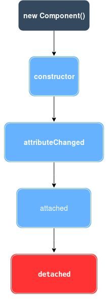
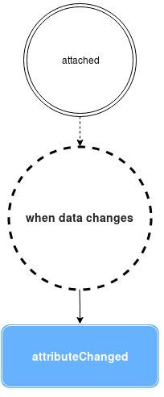

Lifecycle
Component lifecycle

Component connectedCallback
By implementing this method your module will be prompted for it once your component is in "DOM".
eg.
connectedCallback():void{
console.log('im in DOM');
}
Event disconnectedCallback
By implementing this method your module will be prompted for it once your component is detached from "DOM".
eg.
disconnectedCallback():void{
console.log('im out');
}
Event shouldUpdateCallback
By implementing this method you can decide if a component should refresh or not by returning true or false.

eg.
private shouldUpdateCallback( new_props:ModuleA ):boolean{
return this.title !== new_props.title;
}
Event attributeChangedCallback
By implementing this method your module will be notified when any attribute is changed.

eg.
attributeChangedCallback( attrName:string, oldVal:any, newVal:any ):void{
console.log(`attibute ${attrName} has changed!`);
}